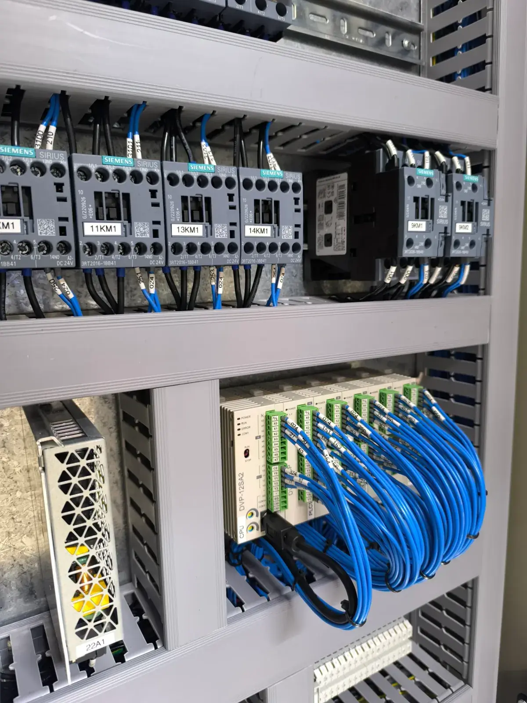
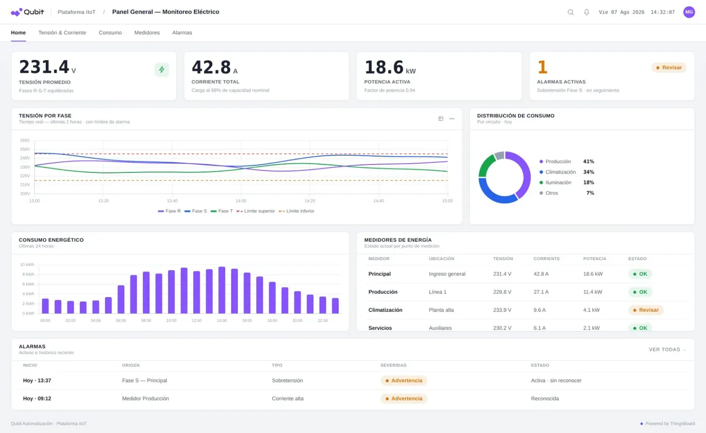
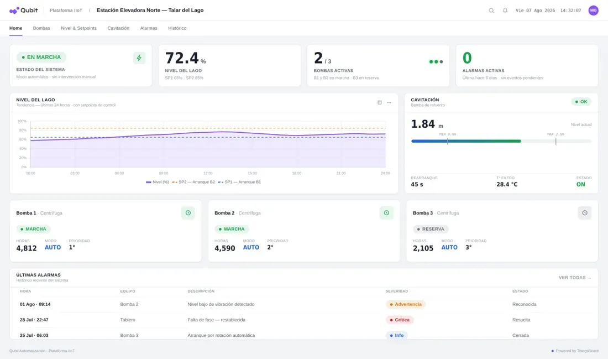

Agua y efluentesFerraro y Asociados: monitoreo remoto de planta de efluentes
−90%de visitas técnicas innecesarias
Se conecta a tus PLC y sensores, muestra tu planta tal como es y te avisa antes de que algo falle.

Sentinel es la plataforma de monitoreo y control remoto de Qubit. Se integra a los PLC, sensores y protocolos que ya están en tu planta, reúne todos los datos en un panel con el esquema real de tus equipos y los usa para avisarte, registrar cada evento y anticipar fallas.

Mirá y operá tus equipos en tiempo real desde la PC, la tablet o el teléfono, sin estar en planta.
Alarmas automáticas por correo o SMS, y una IA que detecta cuándo un equipo empieza a degradarse.
Historial auditable de variables y eventos, con un reporte diario de la operación que se genera solo.
Elegí tu aplicación y mirá qué variables sigue Sentinel en cada caso.
Combustible extra por mm de sarro2%
Presión, temperatura y estado del quemador en tiempo real, con alarma ante cualquier desvío.
Energía extra con 0,3 mm de sarro12%
Temperaturas de entrada y salida, ventiladores y bombas, para cuidar el rendimiento y el consumo.
Estado, horas de uso y alternancia de cada bomba. Arrancalas o detenelas desde el teléfono.
Nivel en tiempo real, aviso antes de que se desborde o se vacíe, e historial de consumo.
Pérdida por membrana sucia15–40%
Presiones, caudales y conductividad, para saber cuándo limpiar o cambiar las membranas.
Tensión, corriente y consumo por circuito, con aviso ante sobretensiones o picos de carga.
¿Tu proceso no está en la lista? Sentinel se adapta a cualquier tipo de planta: integramos todas las áreas y equipos en un mismo sinóptico.
Fuente: Departamento de Energía de EE.UU., ASHRAE Handbook, EPA WaterSense, Water Tech Online. Valores de referencia para la industria.
La IA analiza los datos que Sentinel ya recolecta, sin sensores ni integraciones adicionales.
Anticipa cuándo una variable va a superar un límite crítico, antes de que pase.
Calcula la salud de cada equipo y avisa cuando empieza a degradarse.
Identifica desvíos del comportamiento normal en tiempo real.
Preguntale a la IA sobre tus datos y obtené respuestas al instante.
Sentinel se suma a lo que ya tenés, sin cambiar tus equipos ni modificar el proceso productivo.
Sensores que miden lo que necesitás: temperatura, presión, nivel, caudal o conductividad.
Un gateway en planta procesa los datos al instante y acciona los equipos.
La plataforma reúne toda la información y la presenta en una sola pantalla.
La IA analiza el historial, anticipa fallas y sugiere cuándo intervenir.
Evaluamos tus PLC, los sensores que ya tenés y qué necesitás ver o controlar.
Te enviamos un presupuesto detallado de sensores, gateway e instalación, junto con el abono de la plataforma.
Montamos los equipos, armamos el sinóptico de tu planta, configuramos alarmas y usuarios, y activamos el monitoreo.
USD 130por mes
Abono de la plataforma, sin IVA.
Se suman al abono y se cobran por mes.
¿Dudas sobre equipos, moneda o soporte? Mirá las preguntas sobre precios.
Plantas que hoy se monitorean y controlan con Sentinel.

Agua y efluentes−90%de visitas técnicas innecesarias
¿Tenés otra duda? Escribinos por WhatsApp o desde el formulario y te respondemos dentro de 1 día hábil.
No. Sentinel se integra con los PLC, sensores y protocolos estándar de la industria que ya tenés. En el relevamiento técnico revisamos tus equipos y te decimos qué hace falta para conectarlos.
No. Sentinel lee y controla tus equipos sin cambiar cómo produce la planta. Los trabajos de instalación se coordinan con tu equipo.
Desde la PC, la tablet o el teléfono, en cualquier lugar con conexión a internet.
Las dos cosas. Desde el mismo panel encendés, apagás o ajustás parámetros, según los permisos de cada usuario.
Sentinel envía alarmas automáticas por correo o SMS ante cualquier anomalía, y deja cada evento registrado en el historial.
Analiza los datos que Sentinel ya recolecta, sin sensores adicionales: anticipa cuándo una variable va a superar un límite crítico, calcula la salud de cada equipo, detecta desvíos del comportamiento normal y responde preguntas sobre tus datos.
Sí. Todas tus plantas o ubicaciones quedan en un mismo panel.
Cada usuario tiene un perfil con su nivel de acceso. Por ejemplo, alguien de supervisión puede ver la planta sin poder operar equipos.
No. Si hace falta instalar un gateway o sensores, se cotizan aparte.
Sumás los packs que necesites (más dispositivos, usuarios, alarmas o SMS) sin cambiar de plan. Sentinel está pensado para crecer con tu planta.
Los precios están en dólares, sin IVA. Podés pagar en dólares o en pesos, al tipo de cambio vendedor del Banco Nación del día anterior al pago.
La capacitación sobre el uso de la plataforma está incluida. Las horas de soporte técnico para hacer modificaciones se cobran aparte (USD 50 por hora).
Contanos qué equipos querés monitorear y coordinamos la visita. Te respondemos dentro de 1 día hábil.